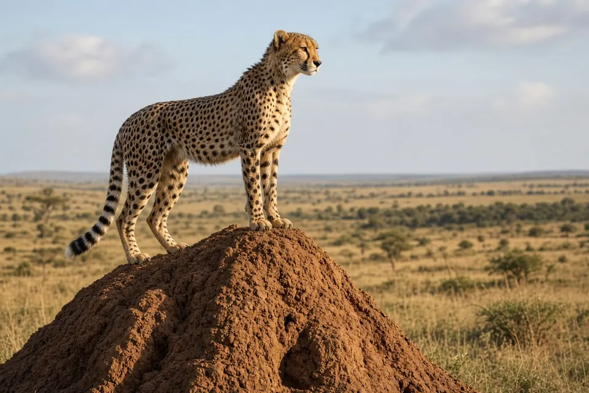

Home › Blog › How do cheetahs live alongside lions and hyenas?
How do cheetahs live alongside lions and hyenas? What Serengeti research shows
Cheetahs survive alongside lions and spotted hyenas mainly by avoiding them, not by fighting them. Lions and hyenas often steal cheetah kills and kill cheetah cubs, and sometimes adults, so cheetahs move away from these larger carnivores, use places and moments where they are less likely to meet them, and change how they behave at a kill: cheetahs without cubs eat fast, while mothers keep watch. Long term studies in the Serengeti show that these tactics work well enough that cheetah numbers stayed roughly stable even while the lion population nearly tripled.
Why lions and hyenas are a problem for cheetahs
Cheetahs are built for speed, not for fighting. In most large carnivore communities the cheetah's main competitors for food, lions and spotted hyenas, are also its main predators. J. S. Hunter, Sarah Durant and Tim Caro (Behavioral Ecology and Sociobiology, 2007) put it plainly: cheetahs are frequent victims of kleptoparasitism, which means having a kill stolen, and their cubs, and sometimes adults, are killed by lions or spotted hyenas.
In an earlier study of Serengeti carnivores, Durant (Journal of Animal Ecology, 1998) described cheetahs as having low competitive ability compared with hyenas and lions and argued that "cheetahs always lose in direct competition". The question is how they persist at all. For the basic biology behind the cheetah's build, see our cheetah facts page.
Tactic 1: keep your distance
Durant's 1998 study used four years of distribution data from Serengeti National Park, Tanzania. It found that:
- Cheetahs were more strongly associated with each other than with lions or hyenas, and used areas with low density prey.
- They avoided lions and hyenas locally in both space and time.
- This avoidance was flexible: it was strongest when cheetahs were hunting or eating, the moments when they risked losing food or a close encounter.
- Mothers with young cubs, whose range is restricted, came into contact with lions more often than free ranging cheetahs.
Durant called the places with few lions and hyenas "competition refuges" and argued that the cheetah's mobility is the key to its continued coexistence with these predators. A follow up experiment, in which recorded lion and hyena calls were played to wild cheetahs, found that cheetahs moved away and were much less likely to hunt afterwards (Durant, Behavioral Ecology, 2000). We cover that experiment in more detail in why do so few cheetah cubs survive?

Tactic 2: be careful at the kill
A kill is the riskiest place for a cheetah. Between 1980 and 2002, Hunter and colleagues observed 639 kills made by cheetahs in the Serengeti. Many were visited by scavengers, from relatively harmless vultures and jackals to dangerous spotted hyenas and lions. The team looked at whether cheetahs hid carcasses, how vigilant they were, and how long they stayed after finishing eating.
| Cheetah group | What their behavior at kills suggested |
|---|---|
| Single females | No clear sign that they were trying to avoid being killed themselves |
| Males, often in groups | Behavior in line with avoiding being killed |
| Mothers with cubs | Behavior strongly shaped by the risk of their cubs being killed |
The authors concluded that cheetahs use several behavioral counterstrategies to avoid being killed, or having their cubs killed, by other predators.
Tactic 3: eat fast, or keep watch
Anne Hilborn and colleagues (Behavioral Ecology and Sociobiology, 2018) went further, using 35 years of observations covering more than 400 hunts by 159 individual cheetahs in Serengeti National Park. They found two different strategies:
- Males and single females, whose main threat is having their kill stolen, were less vigilant and ate quickly, which shortened the time they spent handling the carcass.
- Mothers with cubs did the opposite. They prioritised vigilance over eating speed and spent longer at the kill. That watchfulness helps protect cubs from lions and spotted hyenas while giving the cubs time to feed.
In other words, a cheetah adjusts its feeding behavior to the kind of danger it faces. How hunting itself works is covered in how fast is a cheetah? and do cheetahs abandon hunts because they overheat?
Do lions keep cheetah numbers down?
It is often assumed that wherever lions are common, cheetahs cannot do well. Swanson and colleagues (Journal of Animal Ecology, 2014) tested that idea with 30 years of Serengeti population data and six years of radio tracking. Their findings:
- The Serengeti lion population nearly tripled between 1966 and 1998.
- Over the same period, African wild dogs declined and then disappeared from the study area, but cheetah numbers stayed largely unchanged.
- Cheetahs mostly used areas of high lion density, rather than being pushed out of them.
- Data from fenced reserves in southern Africa showed a similar contrast between wild dogs and cheetahs.
The authors said their results challenge the widespread perception that lions undermine cheetah conservation, and pointed to fine scale avoidance as the likely way cheetahs reduce the impact of lions. A separate cub study in the Kgalagadi Transfrontier Park also questioned how much lions limit cheetahs (Mills and Mills, Journal of Zoology, 2014).
Avoidance still has a cost
Living beside lions is not free. Vanak and colleagues (Ecology, 2013) tracked the fine scale movements of almost every lion, leopard, cheetah and African wild dog in a closed (fenced) study system. Lions moved largely where they liked, anchoring themselves in prey rich areas. Leopards and cheetahs overlapped with lion home ranges but reduced their risk through fine scale avoidance and restricted foraging.
The cost of this competition was most obvious for cheetahs, especially in the wet season, when they avoided areas with energetically rewarding large prey (wildebeest) if those areas overlapped heavily with where lions were active. So the cheetah's strategy works, but it means giving up some good hunting. See how all six big cats compare on our comparison page and read more about big cat behavior.
Key takeaways
- Lions and spotted hyenas steal cheetah kills and kill cheetah cubs, and sometimes adults (Hunter et al. 2007).
- Cheetahs avoid them in space and time, most strongly while hunting or eating (Durant 1998).
- At kills, cheetahs without cubs eat fast; mothers stay vigilant to protect cubs (Hilborn et al. 2018).
- Serengeti cheetah numbers stayed largely stable while lions nearly tripled (Swanson et al. 2014).
- Avoidance has a price: cheetahs may give up prey rich areas that lions use heavily (Vanak et al. 2013).
Frequently asked questions
Do lions kill cheetahs?
Yes. Lions and spotted hyenas kill cheetah cubs and sometimes adult cheetahs, and they often steal cheetah kills. In the Serengeti, cheetahs' behavior at kills reflects these risks (Hunter, Durant and Caro 2007).
How do cheetahs avoid lions?
Mainly by keeping their distance. Serengeti cheetahs avoided lions and hyenas in both space and time, most strongly when hunting or eating, and moved away when lion or hyena calls were played to them (Durant 1998; Durant 2000).
Why do cheetahs eat so quickly?
To reduce the chance of losing their kill. Male cheetahs and single females, whose main threat is kleptoparasitism, were less vigilant and ate quickly, shortening their time at the carcass (Hilborn et al. 2018).
Do lions reduce cheetah populations?
Not necessarily. In the Serengeti the lion population nearly tripled between 1966 and 1998 while cheetah numbers stayed largely unchanged, and cheetahs mostly used areas of high lion density (Swanson et al. 2014).
Do cheetahs and lions share the same areas?
Often, yes. In a closed (fenced) study system, cheetahs and leopards overlapped with lion home ranges but avoided lions at a fine scale, at the cost of sometimes avoiding prey rich areas (Vanak et al. 2013).
Cite this page
APA: BigCatWise. (2026, October 26). How do cheetahs live alongside lions and hyenas?. https://bigcatwise.com/blog/how-do-cheetahs-live-alongside-lions-and-hyenas.html
MLA: "How do cheetahs live alongside lions and hyenas?." BigCatWise, 26 Oct. 2026, bigcatwise.com/blog/how-do-cheetahs-live-alongside-lions-and-hyenas.html.
Chicago: BigCatWise. "How do cheetahs live alongside lions and hyenas?." Last modified October 26, 2026. https://bigcatwise.com/blog/how-do-cheetahs-live-alongside-lions-and-hyenas.html.
Please check the date you accessed the page and adjust to your teacher's or journal's style guide.
Sources
- Durant (1998) Competition refuges and coexistence: an example from Serengeti carnivores, Journal of Animal Ecology 67(3): 370-386. DOI 10.1046/j.1365-2656.1998.00202.x
- Durant (2000) Living with the enemy: avoidance of hyenas and lions by cheetahs in the Serengeti, Behavioral Ecology 11(6): 624-632. DOI 10.1093/beheco/11.6.624
- Hunter, Durant and Caro (2007) To flee or not to flee: predator avoidance by cheetahs at kills, Behavioral Ecology and Sociobiology 61(7): 1033-1042. DOI 10.1007/s00265-006-0336-4
- Hilborn, Pettorelli, Caro, Kelly, Laurenson and Durant (2018) Cheetahs modify their prey handling behavior depending on risks from top predators, Behavioral Ecology and Sociobiology 72(4): 74. DOI 10.1007/s00265-018-2481-y
- Swanson, Caro, Davies-Mostert, Mills, Macdonald, Borner, Masenga and Packer (2014) Cheetahs and wild dogs show contrasting patterns of suppression by lions, Journal of Animal Ecology 83(6): 1418-1427. DOI 10.1111/1365-2656.12231
- Vanak, Fortin, Thaker, Ogden, Owen, Greatwood and Slotow (2013) Moving to stay in place: behavioral mechanisms for coexistence of African large carnivores, Ecology 94(11): 2619-2631. DOI 10.1890/13-0217.1
- Mills and Mills (2014) Cheetah cub survival revisited: a re-evaluation of the role of predation, especially by lions, and implications for conservation, Journal of Zoology 292(2): 136-141. DOI 10.1111/jzo.12087
- IUCN SSC Cat Specialist Group: Cheetah
Figures are rounded summaries of the sources above. Wild populations are hard to count, so estimates change as new surveys are published.